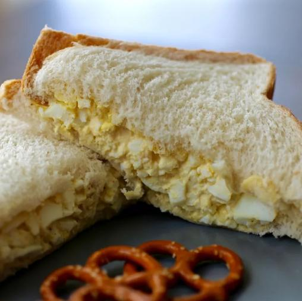

Egg Salad Sandwich

Description
This egg salad tastes wonderful in a sandwich and will definitely be devoured!
It's really good on rye.
Make deli-worthy egg salad sandwiches at home with this top-rated egg salad recipe!
you'll come back to it again and again.
Ingredients
- 8 eggs
- 1/2 cup mayonnaise
- 1/4 cup chopped green onion
- 1 teaspoon prepared yellow mustard
- 1/4 teaspoon paprika
- Salt and pepper to taste
Steps
- Place eggs in a saucepan and cover with cold water.
- Bring water to a boil and immediately remove from heat.
- Cover and let eggs stand in hot water for 10 to 12 minutes.
- Remove from hot water, cool, peel, and chop.
- Place chopped eggs in a bowl; stir in mayonnaise, green onion, and mustard.
- Season with paprika, salt, and pepper.
- Stir and serve on your favorite bread or crackers.
Recipe found from
All Recipes.